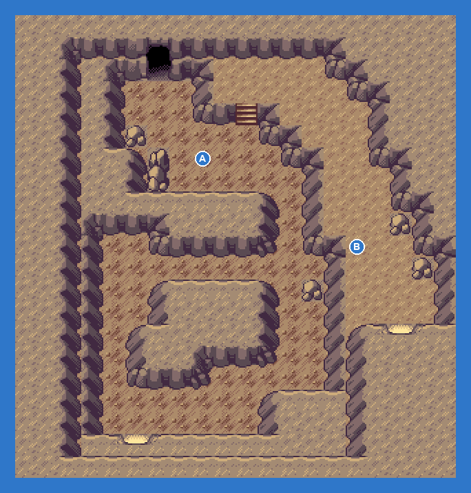
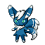

PokémonEMMA'S EMERALD
OFFICIAL Strategy Guide
Seafloor Cavern Room1
‹ WalkthroughOptional area
TIP
Wild Pokémon here are LV28–36. Time of day: M = morning (6–10), D = day (10–19), E = evening (19–20), N = night (20–6).
Trainers
| AHorizon GRUNT: Poochyena LV36Dark |
| BHorizon GRUNT: Carvanha LV36WaterDark |
Catch ’Em All! Grass & caves
 | Zubat: | LV30 | Common | MDEN |
 | Golbat: | LV34 | Common | MDEN |
 | Dhelmise: | LV31–36 | Uncommon | MDEN |
 | Aerodactyl: | LV28 | Uncommon | MDEN |
 | Archaludon: | LV30–36 | Uncommon | MDEN |
 | Shuckle: | LV29–30 | Uncommon | MDEN |
 | Dracozolt: | LV34–35 | Uncommon | MDEN |
 | Galarian Stunfisk: | LV34–36 | Uncommon | MDEN |
 | Turtonator: | LV29–34 | Uncommon | MDEN |
 | Meowstic (M): | LV35–36 | Uncommon | MDEN |
 | Shieldon: | LV34–35 | Uncommon | MDEN |
 | Honedge: | LV33–35 | Uncommon | MDEN |
 | Goomy: | LV35–36 | Uncommon | MDEN |
 | Amaura: | LV28–30 | Uncommon | MDEN |
 | Cyclizar: | LV34–36 | Uncommon | MDEN |
 | Stonjourner: | LV30–32 | Uncommon | MDEN |
 | Druddigon: | LV31–32 | Uncommon | MDEN |
 | Carbink: | LV32–36 | Uncommon | MDEN |
 | Orthworm: | LV33 | Uncommon | MDEN |
 | Rhyhorn: | LV31 | Uncommon | MDEN |
 | Cranidos: | LV35–36 | Uncommon | MDEN |
 | Klawf: | LV29–33 | Rare | MDEN |
 | Tyrunt: | LV31–33 | Rare | MDEN |
 | Onix: | LV28 | Rare | MDEN |
 | Axew: | LV28–29 | Rare | MDEN |
 | Jangmo-o: | LV30–32 | Rare | MDEN |
 | Lileep: | LV34–35 | Rare | MDEN |
 | Hisuian Arcanine: | LV35–36 | Rare | MDEN |
 | Dratini: | LV34 | Rare | MDEN |
 | Bagon: | LV32–34 | Rare | MDEN |
 | Anorith: | LV34–35 | Rare | MDEN |
‹ WalkthroughOptional area
132